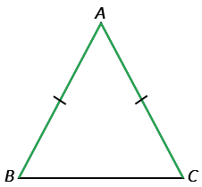
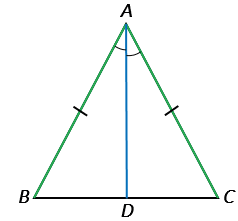

В равнобедренном треугольнике углы при основании равны.
Дано: △АВС - равнобедренный, ВС - основание.
Доказать: ∠В =∠С.
Доказательство:

Проведем биссектрисуАD из вершины А к стороне ВС.

Рассмотрим △АВD и △АСD: АВ = АС по условию (△АВС - равнобедренный), АD - общая сторона, ∠BAD = ∠CAD, так как АD - биссектриса по построению, ⇒ △АВD = △АСD по первому признаку равенства треугольников ⇒ ∠В = ∠С, потому что в равных треугольниках против равных сторон лежат равные углы (∠В лежит против стороны АС, ∠С. - против стороны АВ).
Теорема доказана.
Если в каком-либо треугольнике два угла равны, то такой треугольник равнобедренный.